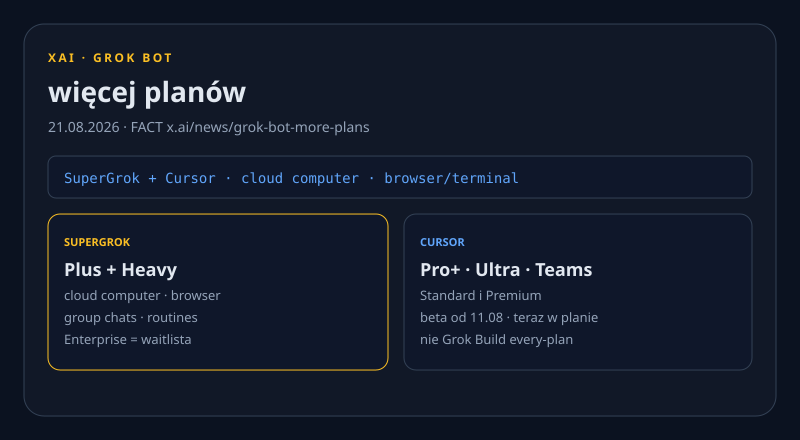

Mythos 5 dla defenderów. Code 2.1.239. Grok Bot w Cursor.
Nowe vs 21.08: Mythos 5 + $35M DAF, Code 2.1.239, Grok Bot w SuperGrok/Cursor, Sol $4/$20, DeepSeek Vision, Nvidia AVO 100%, Cloverleaf, Versa halt US. X: 402. Reddit: 403. Dziura ≠ cisza.

Mythos 5 dla defenderów + $35M Defender Advantage Fund
NOWE WAŻNE Skany Claude Security (public beta, Enterprise) lecą na Mythos 5: CWE, pewność/ciężar, sugerowany patch. Billing = zwykłe tokeny; interaktywny patch w Code idzie na modele org, nie Mythos.
Nowy Defender Advantage Fund: $35M kredytów Claude na patche OSS (pilot grants first). Partnerzy cyber dostaną artefakty defensywne bez bezpośredniego dostępu do modelu.


Produkty i modele
Claude Code 2.1.239
NOWE 21.08 19:54 UTC: /cost liczy premię 1,1× US-only; nowe /claude-api upgrade (Python 0.x→1.x); pluginy name@synced; fix podwójnego billingu Bedrock za proxy. 2.1.238 nie novum.
Grok Bot na więcej planów
NOWE 21.08: Grok Bot w SuperGrok Plus/Heavy oraz Cursor Pro+/Ultra/Teams. Boty: cloud computer, przeglądarka/terminal, group chat, scheduled routines; Enterprise nadal waitlista.
GPT-5.6 Sol $4/$20 + region
NOWE Sol: $4/$20 za 1M in/out, promo co najmniej do 21.11 — FACT changelog, nie plotka HN. Per-request regional processing (prefixed domain) + ranking pluginów ChatGPT tylko web/mobile, nie desktop.
DeepSeek V4-Flash-Vision-Exp
NOWE 21.08: multimodal deepseek-v4-flash-vision-exp — obraz base64/URL/Files, ≤384 tok/obraz, stawki V4-Flash. Files API live i darmowe.
Laby i research
Nvidia AVO 100.00 ARC-AGI-3
NOWE WAŻNE AVO (pamięć + supervisor + narzędzia) = 100.00 RHAE na ARC-AGI-3 (183 poziomy / 25 env). Własny eval Nvidii: Opus 5 z ~30% baseline modelu do 100% jako agent — harness, nie nowy model.
AI-Native SDLC playbook
NOWE Playbook Applied AI 21.08: intent.md / spec.md / plan.md, hooki, eval w CI. Best-practice, nie SKU.
Biznes
Nvidia × Cloverleaf
NOWE FACT: minority stake w Cloverleaf (site/power/cooling pod AI DC). Kwota = REPORTED setki milionów (WSJ via TC); firmy nie podały sumy.
Starcloud +$250M / $2,3 mld
NOWE FACT: extension Series A, CEO on-record. Nvidia ~$25M = REPORTED. Orbitalne inference, Starcloud-3 na Starship.
Apple: >200 cięć Siri + Vision Pro
REPORTED Gurman: ~100 Vision Pro + ~100 Siri. FACT: Apple „evolve our business”. Pivot na AI/okulary 2027.
Opus 4.6 nadal w API
NOWE TC: Opus 4.6 nadal serwuje explicit; 4.7–5 odporne; 4.6 nie zdeprecjonowane (API/Azure/Bedrock).
Open-source / dev
mattpocock/skills +3 362★
NOWE TREND Największy daily spike weekendu. Skills jako jednostka dystrybucji zachowania agenta (Claude Code / Codex / Cursor).
Vercel fx (~6 MB Zig)
NOWE Harness+CLI w Zig, ~6 MB, Apache-2.0, model-agnostic. PH #4 sobota — agent jako Unix shell, nie Electron.
Narzędzia
OzBrain — shared brain
NOWE Show HN 58: hosted knowledge layer dla Claude Code / Codex / Cursor. Konflikt + chunking pod tokeny.
Shoehorn — kwantyzacja local
NOWE Show HN 83: „quantize any model to run on your machine”. Najwyższy Show HN dnia obok wczorajszych magnesów.
Gadżety
HoverAir Versa HALTED w USA
NOWE TREND Grant FCC zniknął; US nie kupi Flight Kit 3 dni po debiucie Indiegogo. CROWDFUNDING, nie shipping — material update vs loophole.
Meta: patent kill-switch
NOWE Hardware privacy mute circuit — odcina sensory AR tak, by exploit software go nie zdjął. FACT zgłoszenia, nie SKU.
Sygnały X + Reddit + HN
X HOLE user-X @ProductRootIO. get_users_me 200, potem search_news 402 credits depleted. search_posts_all nigdy. Bez scrapu Chrome. Dziura ≠ cisza.
REDDIT HOLE r/LocalLLaMA, r/ClaudeAI, r/OpenAI: 403. Nie wymyślamy wątków.
HN: Kagi paywall 1063 · AI-blind 318 · Claudette 234 · OzBrain 58. Piano/Huzzah wciąż wspinają się — bez nowej substancji, nie NOWE.
Co warto dziś sprawdzić
- Mythos 5 + $35M DAF. claude.com
- Code 2.1.239 (2.1.238 nie novum). v2.1.239
- Grok Bot SuperGrok/Cursor. x.ai
- Sol $4/$20 + regional. changelog · DeepSeek Vision. DeepSeek
- AVO 100% + SDLC playbook. AVO · SDLC
- Cloverleaf / Starcloud / Apple. Cloverleaf · Starcloud · Apple
- Versa halt US + skills + fx. Versa · skills · fx
3 tweets ready to post
https://claude.com/blog/bringing-claude-mythos-5-to-more-defenders
https://github.com/anthropics/claude-code/releases/tag/v2.1.239
https://x.ai/news/grok-bot-more-plans